Estadística Aplicada
Universidad CEU San Pablo
Los modelos de distribución de probabilidad vistos en el tema anterior explican el comportamiento de las variables aleatorias, pero para ello debemos saber qué modelo de distribución sigue una determinada variable. Este es el primer paso de la etapa de Inferencia Estadística.
Para determinar con exactitud el modelo de distribución de una variable hay que conocer la característica estudiada en todos los individuos de la población, lo cual no es posible en la mayoría de los casos (inviabilidad económica, física, temporal, etc.).
Para evitar estos inconvenientes se recurre al estudio de una muestra, a partir de la cual se trata de averiguar, de manera aproximada, el modelo de distribución de la variable en la población.
Estudiar un número reducido de individuos de una muestra en lugar de toda la población tiene indudables ventajas:
Pero también presenta algunos inconvenientes:
Afortunadamente, estos errores pueden ser superados: La representatividad de la muestra se consigue eligiendo la modalidad de muestreo más apropiada para el tipo de estudio; en el caso de los errores, aunque no se pueden evitar, se tratará de reducirlos al máximo y acotarlos.
Los valores de una variable \(X\) en una muestra de tamaño \(n\) de una población pueden verse como el valor de una variable aleatoria \(n\)-dimensional.
Definición 1 (Variable aleatoria muestral) Una variable aleatoria muestral de una variable \(X\) estudiada en una población es una colección de \(n\) variables aleatorias \(X_1,\ldots,X_n\) tales que:
Los valores que puede tomar esta variable \(n\) dimensional, serán todas las posibles muestras de tamaño \(n\) que pueden extraerse de la población.
Las tres características fundamentales de la variable aleatoria muestral son:
Homogeneidad: Las \(n\) variables que componen la variable aleatoria muestral siguen la misma distribución.
Independencia: Las variables son independientes entre sí.
Modelo de distribución: El modelo de distribución que siguen las \(n\) variables.
Las dos primeras cuestiones pueden resolverse si se utiliza muestreo aleatorio simple para obtener la muestra. En cuanto a la última, hay que responder, a su vez, a dos cuestiones:
En este tema se abordará la segunda cuestión, es decir, suponiendo que se conoce el modelo de distribución de una población, se intentará estimar los principales parámetros que la definen. Por ejemplo, los principales parámetros que definen las distribuciones vistas en el tema anterior son:
| Distribución | Parámetro |
|---|---|
| Binomial | \(n,p\) |
| Poisson | \(\lambda\) |
| Uniforme | \(a,b\) |
| Normal | \(\mu,\sigma\) |
| Chi-cuadrado | \(n\) |
| T-Student | \(n\) |
| F-Fisher | \(m,n\) |
La distribución de probabilidad de los valores de la variable muestral depende claramente de la distribución de probabilidad de los valores de la población.
Ejemplo 1 Sea una población en la que la cuarta parte de las familias no tienen hijos, la mitad de las familias tiene 1 hijo, y el resto tiene 2 hijos.
Por ser función de una variable aleatoria, un estadístico en el muestreo es también una variable aleatoria. Por tanto, su distribución de probabilidad también depende de la distribución de la población y de los parámetros que la determinan (\(\mu\), \(\sigma\), \(p\), …).
Ejemplo 2 Si se toma la media muestral \(\bar X\) de las muestras de tamaño 2 del ejemplo anterior, su distribución de probabilidad es
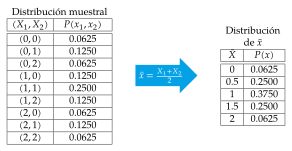
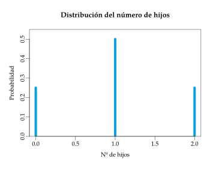
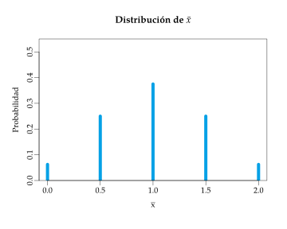
¿Cuál es la probabilidad de obtener una media muestral que aproxime la media poblacional con un error máximo de 0.5?
Como hemos visto, para conocer la distribución de un estadístico muestral, es necesario conocer la distribución de la población, lo cual no siempre es posible. Afortunadamente, para muestras grandes es posible aproximar la distribución de algunos estadísticos como la media, gracias al siguiente teorema:
Teorema 1 (Teorema central del límite) Si \(X_1,\ldots, X_n\) son variables aleatorias independientes (\(n\geq 30\)) con medias y varianzas \(\mu_i=E(X_i)\), \(\sigma^2_i=Var(X_i)\), \(i=1,\ldots,n\) respectivamente, entonces la variable aleatoria \(X=X_1+\cdots+X_n\) sigue una distribución aproximadamente normal de media la suma de las medias y varianza la suma de las varianzas
\[ X=X_1+\cdots+X_n\stackrel{n\geq 30} \sim N\left(\sum_{i=1}^n \mu_i, \sqrt{\sum_{i=1}^n \sigma^2_i}\right) \]
Este teorema además es la explicación de que la mayoría de las variables biológicas presenten una distribución normal, ya que suelen ser causa de múltiples factores que suman sus efectos de manera independiente.
La media muestral de una muestra aleatoria de tamaño \(n\) es la suma de \(n\) variables aleatorias independientes, idénticamente distribuidas:
\[ \bar X = \frac{X_1+\cdots+X_n}{n} = \frac{X_1}{n}+\cdots+\frac{X_n}{n} \]
De acuerdo a las propiedades de las transformaciones lineales, la media y la varianza de cada una de estas variables son
\[ E\left(\frac{X_i}{n}\right) =\frac{\mu}{n} \quad \mbox{y} \quad Var\left(\frac{X_i}{n}\right) = \frac{\sigma^2}{n^2} \]
con \(\mu\) y \(\sigma^2\) la media y la varianza de la población de partida.
Entonces, si el tamaño de la muestra es grande (\(n\geq 30\)), de acuerdo al teorema central del límite, la distribución de la media muestral será normal:
\[ \bar X \sim N\left(\sum_{i=1}^n \frac{\mu}{n},\sqrt{\sum_{i=1}^n \frac{\sigma^2}{n^2}} \right) = N\left(\mu,\frac{\sigma}{\sqrt{n}} \right). \]
Ejemplo 3 (Ejemplo para muestras grandes (\(n\geq 30\))) Supóngase que se desea estimar el número medio de hijos de una población con media \(\mu=2\) hijos y desviación típica \(\sigma=1\) hijo.
¿Qué probabilidad hay de estimar \(\mu\) a partir de \(\bar x\) con un error menor de \(0.2\)?
De acuerdo al teorema central del límite se tiene:
\[ P(1.8<\bar x<2.2) = 0.7267. \]
\[ P(1.8<\bar x<2.2) = 0.9545. \]
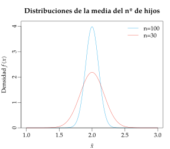
Una proporción \(p\) poblacional puede calcularse como la media de una variable dicotómica (0,1). Esta variable se conoce como variable de Bernouilli \(B(p)\), que es un caso particular de la binomial para \(n=1\). Por tanto, para una muestra aleatoria de tamaño \(n\), una proporción muestral \(\hat p\) también puede expresarse como la suma de \(n\) variables aleatorias independientes, idénticamente distribuidas:
\[ \hat p = \bar X = \frac{X_1+\cdots+X_n}{n} = \frac{X_1}{n}+\cdots+\frac{X_n}{n}, \mbox{ con } X_i\sim B(p) \]
y con media y varianza
\[ E\left(\frac{X_i}{n}\right) =\frac{p}{n} \quad \mbox{y} \quad Var\left(\frac{X_i}{n}\right) = \frac{p(1-p)}{n^2} \]
Entonces, si el tamaño de la muestra es grande (\(n\geq 30\)), de acuerdo al teorema central del límite, la distribución de la proporción muestral también será normal:
\[ \hat p \sim N\left(\sum_{i=1}^n \frac{p}{n},\sqrt{\sum_{i=1}^n \frac{p(1-p)}{n^2}} \right) = N\left(p,\sqrt{\frac{p(1-p)}{n}} \right). \]
Los estadísticos muestrales pueden utilizarse para aproximar los parámetros de la población, y cuando un estadístico se utiliza con este fin se le llama estimador del parámetro.
Definición 2 (Estimador y estimación) Un estimador es una función de la variable aleatoria muestral
\[ \hat \theta = F(X_1,\ldots,X_n). \]
Dada una muestra concreta \((x_1,\ldots,x_n)\), el valor del estimador aplicado a ella se conoce como estimación
\[ \hat \theta_0 = F(x_1,\ldots,x_n). \]
Por ser una función de la variable aleatoria muestral, un estimador es, a su vez, una variable aleatoria cuya distribución depende de la población de partida.
Mientras que el estimador es una función que es única, la estimación no es única, sino que depende de la muestra tomada.
Ejemplo 4 Supóngase que se quiere saber la proporción \(p\) de fumadores en una ciudad. En ese caso, la variable dicotómica que mide si una persona fuma (1) o no (0), sigue una distribución de Bernouilli \(B(p)\).
Si se toma una muestra aleatoria de tamaño 5, \((X_1,X_2,X_3,X_4,X_5)\), de esta población, se puede utilizar la proporción de fumadores en la muestra como estimador para la proporción de fumadores en la población:
\[ \hat p = \frac{\sum_{i=1}^5 X_i}{5} \]
Este estimador es una variable que se distribuye \(\hat p\sim \frac{1}{n}B\left(p,\sqrt{\frac{p(1-p)}{n}}\right)\).
Si se toman distintas muestras, se obtienen diferentes estimaciones:
\[ \begin{array}{|c|c|} \hline \mbox{Muestra} & \mbox{Estimación}\\ \hline\hline (1, 0, 0, 1, 1) & 3/5\\ \hline (1, 0, 0, 0, 0) & 1/5\\ \hline (0, 1, 0, 0, 1) & 2/5\\ \hline \cdots & \cdots\\ \hline \end{array} \]
La estimación de parámetros puede realizar de de dos formas:
La estimación puntual utiliza un único estimador para estimar el valor del parámetro desconocido de la población.
En teoría pueden utilizarse distintos estimadores para estimar un mismo parámetro. Por ejemplo, en el caso de estimar la proporción de fumadores en una ciudad, podrían haberse utilizado otros posibles estimadores además de la proporción muestral, como pueden ser: \[\begin{align*} \hat \theta_1 &= \sqrt[5]{X_1X_2X_3X_4X_5}\\ \hat \theta_2 &= \frac{X_1+X_5}{2}\\ \hat \theta_3 &= X_1 \cdots \end{align*}\]
¿Cuál es el mejor estimador?
La respuesta a esta cuestión depende de las propiedades de cada estimador.
Aunque la estimación puntual no proporciona ninguna medida del grado de bondad de la estimación, existen varias propiedades que garantizan dicha bondad.
Las propiedades más deseables en un estimador son:
Definición 3 (Estimador insesgado) Un estimador \(\hat \theta\) es insesgado para un parámetro \(\theta\) si su esperanza es precisamente \(\theta\), es decir,
\[ E(\hat \theta)=\theta. \]
Cuando un estimador no es insesgado, a la diferencia entre su esperanza y el valor del parámetro \(\theta\) se le llama sesgo:
\[ Sesgo(\hat \theta) = E(\hat \theta)-\theta. \]
Cuanto menor sea el sesgo de un estimador, mejor se aproximarán sus estimaciones al verdadero valor del parámetro.
Definición 4 (Estimador consistente) Un estimador \(\hat \theta_n\) para muestras de tamaño \(n\) es consistente para un parámetro \(\theta\) si para cualquier valor \(\epsilon>0\) se cumple
\[ \lim_{n\rightarrow \infty} P(|\hat \theta_n-\theta|<\epsilon)=1. \]
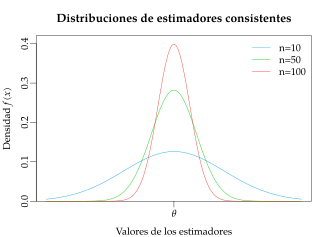
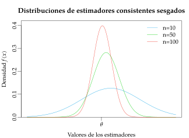
Las condiciones suficientes para que un estimador sea consistente son:
Así pues, si la varianza y el sesgo disminuyen a medida que aumenta el tamaño de la muestra, el estimador será consistente.
Definición 5 (Estimador eficiente) Un estimador \(\hat \theta\) de un parámetro \(\theta\) es eficiente si tiene el menor error cuadrático medio
\[ ECM(\hat \theta) = Sesgo(\hat \theta)^2+Var(\theta). \]
Definición 6 (Estimador asintóticamente normal) Un estimador \(\hat \theta\) es asintóticamente normal si, independientemente de la distribución de la variable aleatoria muestral, su distribución es normal si el tamaño de la muestra es suficientemente grande.:::
Como veremos más adelante esta propiedad es muy interesante para hacer estimaciones de parámetros mediante intervalos.
Definición 7 (Estimador suficiente) Un estimador \(\hat \theta\) es suficiente para un parámetro \(\theta\), si la distribución condicionada de la variable aleatoria muestral, una vez dada la estimación \(\hat \theta = \hat \theta_0\), no depende de \(\theta\).
Esto significa que cuando se obtiene una estimación, cualquier otra información es irrelevante para \(\theta\).
El estimador que se suele utilizar para estimar la media poblacional es la media muestral.
Para muestras de tamaño \(n\) resulta la siguiente variable aleatoria:
\[ \bar X = \frac{X_1+\cdots+X_n}{n} \]
Si la población de partida tiene media \(\mu\) y varianza \(\sigma^2\) se cumple
\[ E(\bar X) = \mu \quad \mbox{y} \quad Var(\bar X)=\frac{\sigma^2}{n} \]
Así pues, la media muestral es un estimador insesgado, y como su varianza disminuye a medida que aumenta el tamaño muestral, también es consistente y eficiente.
Sin embargo, la varianza muestral
\[ S^2 = \frac{\sum_{i=1}^n (X_i-\bar X)^2}{n} \]
es un estimador sesgado para la varianza poblacional, ya que
\[ E(S^2)= \frac{n-1}{n}\sigma^2. \]
No obstante, resulta sencillo corregir este sesgo para llegar a un estimador insesgado:
Definición 8 (Cuasivarianza muestral) Dada una muestra de tamaño \(n\) de una variable aleatoria \(X\), se define la cuasivarianza muestral como
\[ \hat{S}^2 = \frac{\sum_{i=1}^n (X_i-\bar X)^2}{n-1} = \frac{n}{n-1}S^2. \]
El principal problema de la estimación puntual es que, una vez seleccionada la muestra y hecha la estimación, resulta imposible saber el error cometido.
Para controlar el error de la estimación es mejor utilizar la estimación por intervalos
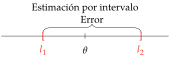
La estimación por intervalos trata de construir a partir de la muestra un intervalo dentro del cual se supone que se encuentra el parámetro a estimar con un cierto grado de confianza. Para ello se utilizan dos estimadores, uno para el límite inferior del intervalo y otro para el superior.
Definición 9 (Intervalo de confianza) Dados dos estimadores \(\hat l_i(X_1,\ldots,X_n)\) y \(\hat l_s(X_1,\ldots,X_n)\), y sus respectivas estimaciones \(l_1\) y \(l_2\) para una muestra concreta, se dice que el intervalo \(I=[l_1,l_2]\) es un intervalo de confianza para un parámetro poblacional \(\theta\), con un nivel de confianza \(1-\alpha\) (o nivel de significación \(\alpha\)), si se cumple
\[ P(\hat l_i(X_1,\ldots,X_n)\leq \theta \leq \hat l_s(X_1,\ldots,X_n))= 1-\alpha. \]
Un intervalo de confianza nunca garantiza con absoluta certeza que el parámetro se encuentra dentro él.
Tampoco se puede decir que la probabilidad de que el parámetro esté dentro del intervalo es \(1-\alpha\), ya que una vez calculado el intervalo, las variables aleatorias que determinan sus extremos han tomado un valor concreto y ya no tiene sentido hablar de probabilidad, es decir, o el parámetro está dentro, o está fuera, pero con absoluta certeza.
Lo que si se deduce de la definición es que el \((1-\alpha)\%\) de los intervalos correspondientes a las todas las posibles muestras aleatorias, contendrán al parámetro. Es por eso que se habla de y no de probabilidad.
Para que un intervalo sea útil su nivel de confianza debe ser alto:
\[\begin{align*} 1-\alpha &= 0.90 \mbox{ o } \alpha=0.10\\ \color{red}{1-\alpha} &= \color{red}{0.95} \mbox{ o } \color{red}{\alpha=0.05}\\ 1-\alpha &= 0.99 \mbox{ o } \alpha=0.01\\ \end{align*}\]
siendo \(0.95\) el nivel de confianza más habitual y \(0.99\) en casos críticos.
Teóricamente, de cada 100 intervalos para estimar un parámetro \(\theta\) con nivel de confianza \(1-\alpha=0.95\), 95 contendrían a \(\theta\) y sólo 5 lo dejarían fuera.
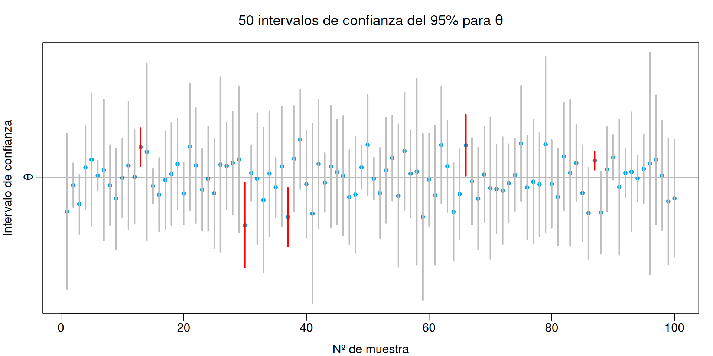Otro de los aspectos más importantes de un intervalo de confianza es su error.
Definición 10 (Error o imprecisión de un intervalo) El error o la imprecisión de un intervalo de confianza \([l_i,l_s]\) es su amplitud
\[ A=l_s-l_i. \]
Para que un intervalo sea útil no debe ser demasiado impreciso.
En general, la precisión de un intervalo depende de tres factores:
La dispersión de la población. Cuanto más dispersa sea, menos preciso será el intervalo.
El nivel de confianza. Cuanto mayor sea el nivel de confianza, menos preciso será el intervalo.
El tamaño muestral. Cuanto mayor sea el tamaño muestral, más preciso será el intervalo.
Si la confianza y la precisión están reñidas, ¿cómo se puede ganar precisión sin perder confianza?
Habitualmente, para calcular un intervalo de confianza se suele partir de un estimador puntual del que se conoce su distribución muestral.
A partir de este estimador se calculan los extremos del intervalo sobre su distribución, buscando los valores que dejan encerrada una probabilidad \(1-\alpha\). Estos valores suelen tomarse de manera simétrica, de manera que el extremo inferior deje una probabilidad acumulada inferior \(\alpha/2\) y el extremo superior deje una probabilidad acumulada superior también de \(\alpha/2\).
Sea \(X\) una variable aleatoria que cumple las siguientes hipótesis:
Bajo estas hipótesis, la media muestral, para muestras de tamaño \(n\), sigue también una distribución normal
\[ \bar X \sim N\left(\mu,\frac{\sigma}{\sqrt n}\right) \]
Tipificando la variable se tiene
\[ Z=\frac{\bar X-\mu}{\sigma/\sqrt n} \sim N(0,1) \]
Sobre esta distribución resulta sencillo calcular los valores \(z_i\) y \(z_s\) de manera que
\[ P(z_i\leq Z \leq z_s) = 1-\alpha. \]
Como la distribución normal estándar es simétrica respecto al 0, lo mejor es tomar valores opuestos \(-z_{\alpha/2}\) y \(z_{\alpha/2}\) que dejen sendas colas de probabilidad acumulada \(\alpha/2\).
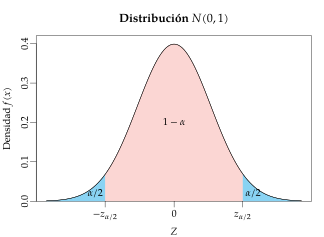A partir de aquí, deshaciendo la tipificación, resulta sencillo llegar a los estimadores que darán los extremos del intervalo de confianza:
\[\begin{align*} 1-\alpha &= P(-z_{\alpha/2}\leq Z \leq z_{\alpha/2}) = P\left(-z_{\alpha/2}\leq \frac{\bar X -\mu}{\sigma/\sqrt{n}} \leq z_{\alpha/2}\right) =\\ &= P\left(-z_{\alpha/2}\frac{\sigma}{\sqrt{n}}\leq \bar X -\mu \leq z_{\alpha/2}\frac{\sigma}{\sqrt{n}}\right)=\\ &= P\left(-\bar{X}-z_{\alpha/2}\frac{\sigma}{\sqrt{n}}\leq -\mu \leq -\bar{X}+z_{\alpha/2}\frac{\sigma}{\sqrt{n}}\right)= \\ &= P\left(\bar{X}-z_{\alpha/2}\frac{\sigma}{\sqrt{n}}\leq \mu \leq \bar{X}+z_{\alpha/2}\frac{\sigma}{\sqrt{n}}\right). \end{align*}\]
Así pues, el intervalo de confianza para la media de una población normal con varianza conocida es:
Teorema 2 (Intervalo de confianza para la media de una población normal con varianza conocida) Si \(X\sim N(\mu, \sigma)\) con \(\sigma\) conocida, el intervalo de confianza para la media \(\mu\) con nivel de confianza \(1-\alpha\) es
\[ \left[\bar{X}-z_{\alpha/2}\frac{\sigma}{\sqrt{n}},\bar{X}+z_{\alpha/2}\frac{\sigma}{\sqrt{n}}\right] \] o bien \[ \bar{X}\pm z_{\alpha/2}\frac{\sigma}{\sqrt{n}} \]
De la fórmula del intervalo de confianza
\[ \bar{X}\pm z_{\alpha/2}\frac{\sigma}{\sqrt{n}} \]
se deducen varias características:
El intervalo está centrado en la media muestral \(\bar X\) que era el mejor estimador de la media poblacional.
La amplitud o imprecisión del intervalo es
\[ A= 2 z_{\alpha/2}\frac{\sigma}{\sqrt{n}} \]
de manera que depende de:
Por tanto, la única forma de reducir la imprecisión del intervalo, manteniendo la confianza, es aumentando el tamaño muestral.
Teniendo en cuenta que la amplitud o imprecisión del intervalo para la media de una población normal con varianza conocida es
\[ A= 2 z_{\alpha/2}\frac{\sigma}{\sqrt{n}} \]
se puede calcular fácilmente el tamaño muestral necesario para conseguir un intervalo de amplitud \(A\) con confianza \(1-\alpha\):
\[ A= 2 z_{\alpha/2}\frac{\sigma}{\sqrt{n}} \Leftrightarrow \sqrt{n}= 2 z_{\alpha/2}\frac{\sigma}{A}, \]
de donde se deduce
\[ \color{red}{n = 4 z_{\alpha/2}^2\frac{\sigma^2}{A^2}} \]
Ejemplo 5 Sea una población de estudiantes en la que la puntuación obtenida en un examen sigue una distribución normal \(X\sim N(\mu,\sigma=1.5)\).
Para estimar la nota media \(\mu\), se toma una muestra de 10 estudiantes:
\[ 4 - 6 - 8 - 7 - 7 - 6 - 5 - 2 - 5 - 3 \]
A partir de esta muestra, podemos calcular el intervalo de confianza para \(\mu\) con un nivel de confianza \(1-\alpha=0.95\) (nivel de significación \(\alpha=0.05\)):
Sustituyendo estos valores en la fórmula del intervalo, se tiene
\[ \bar{X}\pm z_{\alpha/2}\frac{\sigma}{\sqrt{n}} = 5.3\pm 1.96\frac{1.5}{\sqrt{10}} = 5.3\pm 0.93 = \left[4.37,\,6.23\right]. \]
Es decir, \(\mu\) estaría entre \(4.37\) y \(6.23\) puntos con un 95% de confianza.
Ejemplo 6 La imprecisión del intervalo anterior es de \(\pm 0.93\) puntos.
Si se desea reducir esta imprecisión a \(\pm 0.5\) puntos, ¿qué tamaño muestral sería necesario?
\[ n = 4 z_{\alpha/2}^2\frac{\sigma^2}{A^2} = 4\cdot 1.96^2\frac{1.5^2}{(2\cdot 0.5)^2} = 34.57. \]
Por tanto, se necesitaría una muestra de al menos 35 estudiantes para conseguir un intervalo del 95% de confianza y una precisión de \(\pm 0.5\) puntos.
Sea \(X\) una variable aleatoria que cumple las siguientes hipótesis:
Cuando se desconoce la varianza poblacional se suele estimar mediante la cuasivarianza \(\hat{S}^2\). Como consecuencia, el estimador de referencia ya no sigue una distribución normal como en el caso de conocer la varianza, sino un T de Student de \(n-1\) grados de libertad:
\[ \left. \begin{array}{l} \bar X \sim N\left(\mu,\frac{\sigma}{\sqrt{n}}\right)\\ \displaystyle\frac{(n-1)\hat{S}^2}{\sigma^2}\sim \chi^2(n-1) \end{array} \right\} \Rightarrow \frac{\bar X -\mu}{\hat{S}/\sqrt{n}}\sim T(n-1), \]
Como la distribución T de Student, al igual que la normal, también es simétrica respecto al 0, se pueden tomar dos valores opuestos \(-t^{n-1}_{\alpha/2}\) y \(t^{n-1}_{\alpha/2}\) de manera que
\[\begin{align*} 1-\alpha &= P\left(-t^{n-1}_{\alpha/2}\leq \frac{\bar X -\mu}{\hat{S}/\sqrt{n}} \leq t^{n-1}_{\alpha/2}\right)\\ &= P\left(-t^{n-1}_{\alpha/2}\frac{\hat{S}}{\sqrt{n}}\leq \bar X -\mu \leq t^{n-1}_{\alpha/2}\frac{\hat{S}}{\sqrt{n}}\right)\\ &= P\left(\bar X-t^{n-1}_{\alpha/2}\frac{\hat{S}}{\sqrt{n}}\leq \mu \leq \bar X t^{n-1}_{\alpha/2}\frac{\hat{S}}{\sqrt{n}}\right) \end{align*}\]
Teorema 3 (Intervalo de confianza para la media de una población normal con varianza desconocida) Si \(X\sim N(\mu, \sigma)\) con \(\sigma\) desconocida, el intervalo de confianza para la media \(\mu\) con nivel de confianza \(1-\alpha\) es
\[ \left[\bar{X}-t^{n-1}_{\alpha/2}\frac{\hat{S}}{\sqrt{n}},\bar{X}+t^{n-1}_{\alpha/2}\frac{\hat{S}}{\sqrt{n}}\right] \]
o bien
\[ \bar{X}\pm t^{n-1}_{\alpha/2}\frac{\hat{S}}{\sqrt{n}} \]
Al igual que antes, teniendo en cuenta que la amplitud o imprecisión del intervalo para la media de una población con varianza desconocida es
\[ A= 2 t^{n-1}_{\alpha/2}\frac{\hat{S}}{\sqrt{n}} \]
se puede calcular fácilmente el tamaño muestral necesario para conseguir un intervalo de amplitud \(A\) con confianza \(1-\alpha\):
\[ A= 2 t^{n-1}_{\alpha/2}\frac{\hat{S}}{\sqrt{n}} \Leftrightarrow \sqrt{n}= 2 t^{n-1}_{\alpha/2}\frac{\hat{S}}{A}, \]
de donde se deduce
\[ \color{red}{n = 4 (t^{n-1}_{\alpha/2})^2\frac{\hat{S}^2}{A^2}} \]
El único problema, a diferencia del caso anterior en que \(\sigma\) era conocida, es que se necesita \(\hat{S}\), por lo que se suele tomar una muestra pequeña previa para calcularla. Por otro lado, el valor de la T de student suele aproximarse asintóticamente por el de la normal estándar \(t^{n-1}_{\alpha/2}\approx z_{\alpha/2}\).
Ejemplo 7 Supóngase que en el ejemplo anterior no se conoce la varianza poblacional de las puntuaciones.
Trabajando con la misma muestra de las puntuaciones de 10 estudiantes
\[ 4 - 6 - 8 - 7 - 7 - 6 - 5 - 2 - 5 - 3 \]
se puede calcular el intervalo de confianza para \(\mu\) con un nivel de confianza \(1-\alpha=0.95\) (nivel de significación \(\alpha=0.05\)):
Sustituyendo estos valores en la fórmula del intervalo, se tiene
\[ \bar{X}\pm t^{n-1}_{\alpha/2}\frac{\hat{S}}{\sqrt{n}} = 5.3\pm 2.2622\frac{1.8886}{\sqrt{10}} = 5.3\pm 1.351 = \left[3.949,\,6.651\right]. \]
Ejemplo 8 Como se puede apreciar, la imprecisión del intervalo anterior es de \(\pm 1.8886\) puntos, que es significativamente mayor que en el caso de conocer la varianza de la población. Esto es lógico pues al tener que estimar la varianza de la población, el error de la estimación se agrega al error del intervalo.
Ahora, el tamaño muestral necesario para reducir la imprecisión a \(\pm 0.5\) puntos es
\[ n = 4 (z_{\alpha/2})^2\frac{\hat{S}^2}{A^2} = 4\cdot 1.96^2\frac{3.5667}{(2\cdot 0.5)^2} = 54.81. \]
Por tanto, si se desconoce la varianza de la población se necesita una muestra de al menos 55 estudiantes para conseguir un intervalo del 95% de confianza y una precisión de \(\pm 0.5\) puntos.
Sea \(X\) una variable aleatoria que cumple las siguientes hipótesis:
Si la población no es normal las distribuciones de los estimadores de referencia cambian, de manera que los intervalos anteriores no son válidos.
No obstante, si la muestras es grande (\(n\geq 30\)), de acuerdo al teorema central del límite, la distribución de la media muestral se aproximará a una normal, de modo que sigue siendo cierto
\[ \bar X \sim N\left(\mu,\frac{\sigma}{\sqrt{n}}\right) \]
En consecuencia, sigue siendo válido el intervalo anterior.
Teorema 4 (Intervalo de confianza para la media de una población no normal con muestras grandes) Si \(X\) es una variable con distribución no normal y \(n\geq 30\), el intervalo de confianza para la media \(\mu\) con nivel de confianza \(1-\alpha\) es
\[ \bar{X}\pm t^{n-1}_{\alpha/2}\frac{\hat{S}}{\sqrt{n}} \]
Sea \(X\) una variable aleatoria que cumple las siguientes hipótesis:
Para estimar la varianza de una población normal, se parte del estimador de referencia
\[ \frac{nS^2}{\sigma^2} = \frac{(n-1)\hat{S}^2}{\sigma^2}\sim \chi^2(n-1), \]
que sigue una distribución chi-cuadrado de \(n-1\) grados de libertad.
Sobre esta distribución hay que calcular los valores \(\chi_i\) y \(\chi_s\) tales que
\[ P(\chi_i\leq \chi^2(n-1) \leq \chi_s) = 1-\alpha. \]
Como la distribución chi-cuadrado no es simétrica respecto al 0, se toman dos valores \(\chi^{n-1}_{\alpha/2}\) y \(\chi^{n-1}_{1-\alpha/2}\) que dejen sendas colas de probabilidad acumulada inferior de \(\alpha/2\) y \(1-\alpha/2\) respectivamente.
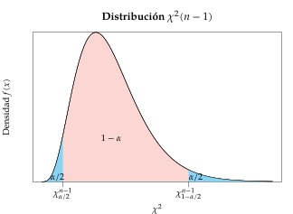Así pues, se tiene
\[\begin{align*} 1-\alpha &= P\left(\chi^{n-1}_{\alpha/2}\leq \frac{nS^2}{\sigma^2} \leq \chi^{n-1}_{1-\alpha/2}\right) = P\left(\frac{1}{\chi^{n-1}_{\alpha/2}}\geq \frac{\sigma^2}{nS^2} \geq \frac{1}{\chi^{n-1}_{1-\alpha/2}}\right)=\\ &= P\left(\frac{1}{\chi^{n-1}_{1-\alpha/2}}\leq \frac{\sigma^2}{nS^2} \leq \frac{1}{\chi^{n-1}_{\alpha/2}}\right) = P\left(\frac{nS^2}{\chi^{n-1}_{1-\alpha/2}}\leq \sigma^2 \leq \frac{nS^2}{\chi^{n-1}_{\alpha/2}}\right). \end{align*}\]
Por tanto, el intervalo de confianza para la varianza de una población normal es:
Teorema 5 (Intervalo de confianza para la varianza de una población normal) Si \(X\sim N(\mu, \sigma)\) con \(\sigma\) conocida, el intervalo de confianza para la varianza \(\sigma^2\) con nivel de confianza \(1-\alpha\) es
\[ \left[\frac{nS^2}{\chi^{n-1}_{1-\alpha/2}},\frac{nS^2}{\chi^{n-1}_{\alpha/2}}\right] \]
Ejemplo 9 Siguiendo con el ejemplo de las puntuaciones en un examen, si se quiere estimar la varianza a partir de la muestra:
\[ 4 - 6 - 8 - 7 - 7 - 6 - 5 - 2 - 5 - 3 \]
para el intervalo de confianza para \(\sigma^2\) con un nivel de confianza \(1-\alpha=0.95\) (nivel de significación \(\alpha=0.05\)) se tiene:
Sustituyendo estos valores en la fórmula del intervalo, se llega a
\[ \left[\frac{nS^2}{\chi^{n-1}_{1-\alpha/2}},\frac{nS^2}{\chi^{n-1}_{\alpha/2}}\right] = \left[\frac{10\cdot 3.21}{19},\frac{10\cdot 3.21}{2.7}\right] = [1.69,\,11.89] \text{ puntos}^2. \]
Para estimar la proporción \(p\) de individuos de una población que presentan una determinada característica, se parte de la variable que mide el número de individuos que la presentan en una muestra de tamaño \(n\). Dicha variable sigue una distribución binomial
\[ X\sim B(n,p) \]
Como ya se vio, si el tamaño muestral es suficientemente grande (en realidad basta que se cumpla \(np\geq 5\) y \(n(1-p)\geq 5\)), el teorema central de límite asegura que \(X\) tendrá una distribución aproximadamente normal
\[ X\sim N(np,\sqrt{np(1-p)}). \]
En consecuencia, la proporción muestral \(\hat p\) también será normal
\[ \hat{p}=\frac{X}{n} \sim N\left(p,\sqrt{\frac{p(1-p)}{n}}\right), \]
que es el estimador de referencia.
Trabajando con la distribución del estimador de referencia
\[ \hat p\sim N\left(p,\sqrt{\frac{p(1-p)}{n}}\right) \]
tras tipificar, se pueden encontrar fácilmente, al igual que hicimos antes, valores \(-z_{\alpha/2}\) y \(z_{\alpha/2}\) que cumplan
\[ P\left(-z_{\alpha/2}\leq \frac{\hat p-p}{\sqrt{p(1-p)/n}}\leq z_{\alpha/2} \right) = 1-\alpha. \]
Así pues, deshaciendo la tipificación y razonando como antes, se tiene
\[\begin{align*} 1-\alpha &= P\left(-z_{\alpha/2}\leq \frac{\hat p-p}{\sqrt{p(1-p)/n}}\leq z_{\alpha/2} \right) \\ &= P\left(-z_{\alpha/2}\frac{\sqrt{p(1-p)}}{n}\leq \hat p-p\leq z_{\alpha/2}\frac{\sqrt{p(1-p)}}{n} \right) \\ &= P\left(\hat{p}-z_{\alpha/2}\frac{\sqrt{p(1-p)}}{n}\leq p\leq \hat{p}+z_{\alpha/2}\frac{\sqrt{p(1-p)}}{n} \right) \end{align*}\]
Por tanto, el intervalo de confianza para una proporción es
Teorema 6 (Intervalo de confianza para una proporción) Si \(X\sim B(n,p)\), y se cumple que \(np\geq 5\) y \(n(1-p)\geq 5\), entonces el intervalo de confianza para la proporción \(p\) con nivel de confianza \(1-\alpha\) es
\[ \left[\hat{p}-z_{\alpha/2}\sqrt{\frac{\hat{p}(1-\hat{p})}{n}},\hat{p}+z_{\alpha/2}\sqrt{\frac{\hat{p}(1-\hat{p})}{n}}\right] \]
o bien
\[ \hat{p}\pm z_{\alpha/2}\sqrt{\frac{\hat{p}(1-\hat{p})}{n}} \]
La amplitud o imprecisión del intervalo para la proporción de una población es
\[ A= 2 z_{\alpha/2}\sqrt{\frac{\hat{p}(1-\hat{p})}{n}} \]
así que se puede calcular fácilmente el tamaño muestral necesario para conseguir un intervalo de amplitud \(A\) con confianza \(1-\alpha\):
\[ A= 2 z_{\alpha/2}\sqrt{\frac{\hat{p}(1-\hat{p})}{n}} \Leftrightarrow A^2= 4 z_{\alpha/2}^2\frac{\hat{p}(1-\hat{p})}{n}, \]
de donde se deduce
\[ \color{red}{n= 4 z_{\alpha/2}^2\frac{\hat{p}(1-\hat{p})}{A^2}} \]
Para poder hacer el cálculo se necesita una estimación de la proporción \(\hat{p}\), por lo que suele tomarse una muestra previa pequeña para calcularla. En el peor de los casos, si no se dispone de una muestra previa, puede tomarse \(\hat{p}=0.5\).
Ejemplo 10 Supóngase que se quiere estimar la proporción de fumadores que hay en una determinada población. Para ello se toma una muestra de 20 personas y se observa si fuman (1) o no (0):
\[ 0 - 1 - 1 - 0 - 0 - 0 - 1 - 0 - 0 - 1 - 0 - 0 - 0 - 1 - 1- 0 - 1 - 1 - 0 - 0 \]
Entonces:
Sustituyendo estos valores en la fórmula del intervalo, se tiene
\[ \hat{p}\pm z_{\alpha/2}\sqrt{\frac{\hat{p}(1-\hat{p})}{n}} = 0.4\pm 1.96\sqrt{\frac{0.4\cdot 0.6}{10}} = 0.4\pm 0.3 = \left[0.1,\,0.7\right]. \]
Es decir, \(p\) estaría entre \(0.1\) y \(0.7\) con un 95% de confianza.
Ejemplo 11 Como se puede apreciar la imprecisión del intervalo anterior es \(\pm 0.3\), que es enorme teniendo en cuenta que se trata de un intervalo para una proporción.
Para conseguir intervalos precisos para estimar proporciones se necesitan tamaños muestrales bastante grandes. Si por ejemplo se quiere una precisión de \(\pm 0.05\), el tamaño muestral necesario sería:
\[ n= 4 z_{\alpha/2}^2\frac{\hat{p}(1-\hat{p})}{A^2}=4\cdot 1.96^2\frac{0.4\cdot 0.6}{(2\cdot0.05)^2}= 368.79. \]
Es decir, se necesitarían al menos 369 individuos para conseguir un intervalo para la proporción con una confianza del \(95\%\).
En muchos estudios el objetivo en sí no es averiguar el valor de un parámetro, sino compararlo con el de otra población. Por ejemplo, comparar si un determinado parámetro vale lo mismo en la población de hombres y en la de mujeres.
En estos casos no interesa realmente estimar los dos parámetros por separado, sino hacer una estimación que permita su comparación.
Se verán tres casos:
Intervalos de confianza para la comparación de dos poblaciones:
Sean \(X_1\) y \(X_2\) dos variables aleatorias que cumplen las siguientes hipótesis:
Bajo estas hipótesis, si se toman dos muestras independientes, una de cada población, de tamaños \(n_1\) y \(n_2\) respectivamente, la diferencia de las medias muestrales sigue una distribución normal
\[ \left. \begin{array}{l} \bar{X}_1\sim N\left(\mu_1,\frac{\sigma_1}{\sqrt{n_1}} \right)\\ \bar{X}_2\sim N\left(\mu_2,\frac{\sigma_2}{\sqrt{n_2}} \right) \end{array} \right\} \Rightarrow \bar{X}_1-\bar{X}_2 \sim N\left(\mu_1-\mu_2,\sqrt{\frac{\sigma^2_1}{n_1}+\frac{\sigma^2_2}{n_2}}\right). \]
A partir de aquí, tipificando, se pueden buscar los valores de la normal estándar \(-z_{\alpha/2}\) y \(z_{\alpha/2}\) que cumplen:
\[ P\left(-z_{\alpha/2}\leq \frac{(\bar{X}_1-\bar{X}_2)-(\mu_1-\mu_2)}{\sqrt{\frac{\sigma^2_1}{n_1}+\frac{\sigma^2_2}{n_2}}} \leq z_{\alpha/2}\right) = 1-\alpha. \]
Y deshaciendo la tipificación, se tiene
\[\begin{align*} 1-\alpha &= P\left(-z_{\alpha/2}\leq \frac{(\bar{X}_1-\bar{X}_2)-(\mu_1-\mu_2)}{\sqrt{\frac{\sigma^2_1}{n_1}+\frac{\sigma^2_2}{n_2}}} \leq z_{\alpha/2}\right) \\ &= P\left(-z_{\alpha/2}\sqrt{\frac{\sigma^2_1}{n_1}+\frac{\sigma^2_2}{n_2}}\leq (\bar{X}_1-\bar{X}_2)-(\mu_1-\mu_2)\leq z_{\alpha/2}\sqrt{\frac{\sigma^2_1}{n_1}+\frac{\sigma^2_2}{n_2}}\right) \\ &= P\left(\bar{X}_1-\bar{X}_2 - z_{\alpha/2}\sqrt{\frac{\sigma^2_1}{n_1}+\frac{\sigma^2_2}{n_2}}\leq \mu_1-\mu_2\leq \bar{X}_1-\bar{X}_2 + z_{\alpha/2}\sqrt{\frac{\sigma^2_1}{n_1}+\frac{\sigma^2_2}{n_2}}\right) \end{align*}\]
Así pues, el intervalo de confianza para la diferencia de medias es
Teorema 7 (Intervalo de confianza para la diferencia de medias de poblaciones normales con varianzas conocidas) Si \(X_1\sim N(\mu_1,\sigma_1)\) y \(X_2\sim N(\mu_2,\sigma_2)\), con \(\sigma_1\) y \(\sigma_2\) conocidas, el intervalo de confianza para la diferencia de medias \(\mu_1-\mu_2\) con nivel de confianza \(1-\alpha\) es
\[ \left[\bar{X}_1-\bar{X}_2-z_{\alpha/2}\sqrt{\frac{\sigma^2_1}{n_1}+\frac{\sigma^2_2}{n_2}},\bar{X}_1-\bar{X}_2+z_{\alpha/2}\sqrt{\frac{\sigma^2_1}{n_1}+\frac{\sigma^2_2}{n_2}}\right] \]
o bien
\[ \bar{X}_1-\bar{X}_2\pm z_{\alpha/2}\sqrt{\frac{\sigma^2_1}{n_1}+\frac{\sigma^2_2}{n_2}} \]
Sean \(X_1\) y \(X_2\) dos variables aleatorias que cumplen las siguientes hipótesis:
Cuando se desconoce la varianza poblacional se puede estimar a partir de las muestras de tamaños \(n_1\) y \(n_2\) de ambas poblaciones mediante la cuasivarianza ponderada:
\[ \hat{S}^2_p = \frac{n_1S^2_1+n_2S^2_2}{n_1+n_2-2}. \]
El estimador de referencia en este caso sigue una distribución T de Student:
\[ \left. \begin{array}{l} \bar{X}_1-\bar{X}_2\sim N\left(\mu_1-\mu_2,\sigma\sqrt{\frac{n_1+n_2}{n_1n_2}} \right)\\ \displaystyle \frac{n_1S_1^2+n_2S_2^2}{\sigma^2} \sim \chi^2(n_1+n_2-2) \end{array} \right\} \Rightarrow \frac{(\bar{X}_1-\bar{X}_2)-(\mu_1-\mu_2)}{\hat{S}_p\sqrt{\frac{n_1+n_2}{n_1n_2}}} \sim T(n_1+n_2-2). \]
A partir de aquí, se pueden buscar los valores de la T de Student \(-t^{n_1+n_2-2}_{\alpha/2}\) y \(t^{n_1+n_2-2}_{\alpha/2}\) que cumplen
\[ P\left(-t^{n_1+n_2-2}_{\alpha/2}\leq \frac{(\bar{X}_1-\bar{X}_2)-(\mu_1-\mu_2)}{\hat{S}_p\sqrt{\frac{n_1+n_2}{n_1n_2}}} \leq t^{n_1+n_2-2}_{\alpha/2}\right) = 1-\alpha. \]
Y deshaciendo la transformación se tiene
\[\begin{align*} 1-\alpha &= P\left(-t^{n_1+n_2-2}_{\alpha/2}\leq \frac{(\bar{X}_1-\bar{X}_2)-(\mu_1-\mu_2)}{\hat{S}_p\sqrt{\frac{n_1+n_2}{n_1n_2}}} \leq t^{n_1+n_2-2}_{\alpha/2}\right) \\ &= P\left(-t^{n_1+n_2-2}_{\alpha/2}\hat{S}_p\sqrt{\frac{n_1+n_2}{n_1n_2}}\leq (\bar{X}_1-\bar{X}_2)-(\mu_1-\mu_2) \leq t^{n_1+n_2-2}_{\alpha/2}\hat{S}_p\sqrt{\frac{n_1+n_2}{n_1n_2}}\right) \\ &= P\left(\bar{X}_1-\bar{X}_2 - t^{n_1+n_2-2}_{\alpha/2}\hat{S}_p\sqrt{\frac{n_1+n_2}{n_1n_2}}\leq \mu_1-\mu_2 \leq \bar{X}_1-\bar{X}_2 + t^{n_1+n_2-2}_{\alpha/2}\hat{S}_p\sqrt{\frac{n_1+n_2}{n_1n_2}}\right). \end{align*}\]
Así pues, el intervalo de confianza para la diferencia de medias es
Teorema 8 (Intervalo de confianza para la diferencia de medias de poblaciones normales con varianzas desconocidas iguales) Si \(X_1\sim N(\mu_1,\sigma_1)\) y \(X_2\sim N(\mu_2,\sigma_2)\), con \(\sigma_1 = \sigma_2\) desconocidas, el intervalo de confianza para la diferencia de medias \(\mu_1-\mu_2\) con nivel de confianza \(1-\alpha\) es
\[ \left[\bar{X}_1-\bar{X}_2-t^{n_1+n_2-2}_{\alpha/2}\hat{S}_p\sqrt{\frac{n_1+n_2}{n_1n_2}},\bar{X}_1-\bar{X}_2+t^{n_1+n_2-2}_{\alpha/2}\hat{S}_p\sqrt{\frac{n_1+n_2}{n_1n_2}}\right] \]
o bien
\[ \bar{X}_1-\bar{X}_2\pm t^{n_1+n_2-2}_{\alpha/2}\hat{S}_p\sqrt{\frac{n_1+n_2}{n_1n_2}} \]
Si \([l_i,l_s]\) es un intervalo de confianza de nivel \(1-\alpha\) para la diferencia de medias \(\mu_1-\mu_2\), entonces
\[ \mu_1-\mu_2 \in [l_i,l_s] \]
con una confianza del \(1-\alpha\%\).
Por consiguiente, según los valores del intervalo de confianza se tiene:
Tanto en el primer como en el segundo caso se dice que entre las medias hay diferencias estadísticamente significativas.
Ejemplo 12 Supóngase que se quiere comparar el rendimiento académico de dos grupos de alumnos, uno con 10 alumnos y otro con 12, que han seguido metodologías diferentes. Para ello se les realiza un examen y se obtienen las siguientes puntuaciones:
\[\begin{align*} X_1 &: 4 - 6 - 8 - 7 - 7 - 6 - 5 - 2 - 5 - 3 \\ X_2 &: 8 - 9 - 5 - 3 - 8 - 7 - 8 - 6 - 8 - 7 - 5 - 7 \end{align*}\]
Si se supone que ambas variables tienen la misma varianza, se tiene
Y sustituyendo en la fórmula del intervalo llegamos a
\[ 5.3-6.75 \pm 2.086\cdot 1.7937\sqrt{\frac{10+12}{10\cdot 12}} = -1.45\pm 1.6021 = [-3.0521,\,0.1521] \text{ puntos}. \]
Es decir, la diferencia de puntuaciones medias \(\mu_1-\mu_2\) está entre \(-3.0521\) y \(0.1521\) puntos con una confianza del \(95\%\).
A la vista del intervalo se puede concluir que, puesto que el intervalo contiene tanto valores positivos como negativos, y por tanto contiene al 0, no puede afirmarse que una de las medias se mayor que la otra, de modo que se supone que son iguales y no se puede decir que haya diferencias significativas entre los grupos.
Sean \(X_1\) y \(X_2\) dos variables aleatorias que cumplen las siguientes hipótesis:
En este caso el estimador de referencia sigue una distribución T de Student
\[ \frac{(\bar{X}_1-\bar{X}_2)-(\mu_1-\mu_2)}{\sqrt{\frac{\hat{S}^2_1}{n_1}+\frac{\hat{S}^2_2}{n_2}}} \sim T(g), \]
donde el número de grados de libertad es \(g=n_1+n_2-2-\Delta\), siendo
\[ \Delta = \frac{(\frac{n_2-1}{n_1}\hat{S}_1^2-\frac{n_1-1}{n_2}\hat{S}_2^2)^2}{\frac{n_2-1}{n_1^2}\hat{S}_1^4+\frac{n_1-1}{n_2^2}\hat{S}_2^4}. \]
A partir de aquí, una vez más, se pueden buscar los valores de la T de Student \(-t^{g}_{\alpha/2}\) y \(t^{g}_{\alpha/2}\) que cumplen
\[ P\left(-t^{g}_{\alpha/2}\leq \frac{(\bar{X}_1-\bar{X}_2)-(\mu_1-\mu_2)}{\sqrt{\frac{\hat{S}^2_1}{n_1}+\frac{\hat{S}^2_2}{n_2}}} \leq t^{g}_{\alpha/2}\right) = 1-\alpha. \]
Y deshaciendo la transformación se llega a
\[\begin{align*} 1-\alpha &= P\left(-t^{g}_{\alpha/2}\leq \frac{(\bar{X}_1-\bar{X}_2)-(\mu_1-\mu_2)}{\sqrt{\frac{\hat{S}^2_1}{n_1}+\frac{\hat{S}^2_2}{n_2}}} \leq t^{g}_{\alpha/2}\right) \\ &= P\left(-t^{g}_{\alpha/2}\sqrt{\frac{\hat{S}^2_1}{n_1}+\frac{\hat{S}^2_2}{n_2}}\leq (\bar{X}_1-\bar{X}_2)-(\mu_1-\mu_2) \leq t^{g}_{\alpha/2}\sqrt{\frac{\hat{S}^2_1}{n_1}+\frac{\hat{S}^2_2}{n_2}}\right) \\ &= P\left(\bar{X}_1-\bar{X}_2 - t^{g}_{\alpha/2}\sqrt{\frac{\hat{S}^2_1}{n_1}+\frac{\hat{S}^2_2}{n_2}}\leq\mu_1-\mu_2 \leq \bar{X}_1-\bar{X}_2 + t^{g}_{\alpha/2}\sqrt{\frac{\hat{S}^2_1}{n_1}+\frac{\hat{S}^2_2}{n_2}}\right) \\ \end{align*}\]
Así pues, el intervalo de confianza para la diferencia de medias es
Teorema 9 (Intervalo de confianza para la diferencia de medias de poblaciones normales con varianzas desconocidas distintas) Si \(X_1\sim N(\mu_1,\sigma_1)\) y \(X_2\sim N(\mu_2,\sigma_2)\), con \(\sigma_1 \neq \sigma_2\) desconocidas, el intervalo de confianza para la diferencia de medias \(\mu_1-\mu_2\) con nivel de confianza \(1-\alpha\) es \[ \left[\bar{X}_1-\bar{X}_2-t^{g}_{\alpha/2}\sqrt{\frac{\hat{S}^2_1}{n_1}+\frac{\hat{S}^2_2}{n_2}},\bar{X}_1-\bar{X}_2-t^{g}_{\alpha/2}\sqrt{\frac{\hat{S}^2_1}{n_1}+\frac{\hat{S}^2_2}{n_2}}\right] \]
o bien
\[ \bar{X}_1-\bar{X}_2\pm t^{g}_{\alpha/2}\sqrt{\frac{\hat{S}^2_1}{n_1}+\frac{\hat{S}^2_2}{n_2}} \]
Como se acaba de ver, existen dos intervalos posibles para estimar la diferencia de medias: uno para cuando las varianzas poblacionales son iguales y otro para cuando no lo son.
Ahora bien, si las varianzas poblacionales son desconocidas,
¿cómo saber qué intervalo utilizar?
La respuesta está en el próximo intervalo que se verá, que permite estimar la razón de varianzas \(\frac{\sigma_2^2}{\sigma_1^2}\) y por tanto, su comparación.
Así pues, antes de calcular el intervalo de confianza para la comparación de medias, cuando las varianzas poblacionales sean desconocidas, es necesario calcular el intervalo de confianza para la razón de varianzas y elegir el intervalo para la comparación de medias en función del valor de dicho intervalo.
Sean \(X_1\) y \(X_2\) dos variables aleatorias que cumplen las siguientes hipótesis:
En este caso, para muestras de ambas poblaciones de tamaños \(n_1\) y \(n_2\) respectivamente, el estimador de referencia sigue una distribución F de Fisher-Snedecor:
\[ \left. \begin{array}{l} \displaystyle \frac{(n_1-1)\hat{S}_1^2}{\sigma_1^2}\sim \chi^2(n_1-1) \\ \displaystyle \frac{(n_2-1)\hat{S}_2^2}{\sigma_2^2}\sim \chi^2(n_2-1) \end{array} \right\} \Rightarrow \frac{\frac{\frac{(n_2-1)\hat{S}_2^2}{\sigma_2^2}}{n_2-1}}{\frac{\frac{(n_1-1)\hat{S}_1^2}{\sigma_1^2}}{n_1-1}} = \frac{\sigma_1^2}{\sigma_2^2}\frac{\hat{S}_2^2}{\hat{S}_1^2}\sim F(n_2-1,n_1-1). \]
Como la distribución F de Fisher-Snedecor no es simétrica respecto al 0, se toman dos valores \(f^{n_2-1,n_1-1}_{\alpha/2}\) y \(f^{n_2-1,n_1-1}_{1-\alpha/2}\) que dejen sendas colas de probabilidad acumulada inferior de \(\alpha/2\) y \(1-\alpha/2\) respectivamente.
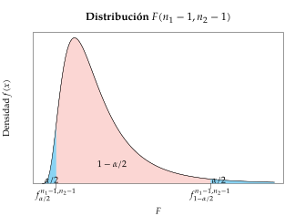Así pues, se tiene
\[\begin{align*} 1-\alpha &= P\left(f^{n_2-1,n_1-1}_{\alpha/2}\leq \frac{\sigma_1^2}{\sigma_2^2}\frac{\hat{S}_2^2}{\hat{S}_1^2} \leq f^{n_2-1,n_1-1}_{1-\alpha/2}\right) = \\ &= P\left(f^{n_2-1,n_1-1}_{\alpha/2}\frac{\hat{S}_1^2}{\hat{S}_2^2} \leq \frac{\sigma_1^2}{\sigma_2^2} \leq f^{n_2-1,n_1-1}_{1-\alpha/2}\frac{\hat{S}_1^2}{\hat{S}_2^2}\right) \end{align*}\]
Por tanto, el intervalo de confianza para la comparación de varianzas de dos poblaciones normales es
Teorema 10 (Intervalo de confianza para el cociente de varianzas de poblaciones normales) Si \(X_1\sim N(\mu_1,\sigma_1)\) y \(X_2\sim N(\mu_2,\sigma_2)\), el intervalo de confianza para el cociente de varianzas \(\sigma_1/\sigma_2\) con nivel de confianza \(1-\alpha\) es
\[ \left[f^{n_2-1,n_1-1}_{\alpha/2}\frac{\hat{S}_1^2}{\hat{S}_2^2},f^{n_2-1,n_1-1}_{1-\alpha/2}\frac{\hat{S}_1^2}{\hat{S}_2^2}\right] \]
Si \([l_i,l_s]\) es un intervalo de confianza de nivel \(1-\alpha\) para la razón de varianzas \(\frac{\sigma_1^2}{\sigma_2^2}\), entonces
\[ \frac{\sigma_1^2}{\sigma_2^2} \in [l_i,l_s] \]
con una confianza del \(1-\alpha\%\).
Por consiguiente, según los valores del intervalo de confianza se tiene:
Ejemplo 13 Siguiendo con el ejemplo de las puntuaciones en dos grupos:
\[\begin{align*} X_1 &: 4 - 6 - 8 - 7 - 7 - 6 - 5 - 2 - 5 - 3 \\ X_2 &: 8 - 9 - 5 - 3 - 8 - 7 - 8 - 6 - 8 - 7 - 5 - 7 \end{align*}\]
Para calcular el intervalo de confianza para la razón de varianzas con una confianza del \(95\%\), se tiene:
Sustituyendo en la fórmula del intervalo se llega a
\[ \left[0.2787\frac{3.5667}{2.9318},\, 3.9121\frac{3.5667}{2.9318}\right] = [0.3391,\, 4.7591] \text{ puntos}^2. \]
Es decir, la razón de varianzas \(\frac{\sigma_1^2}{\sigma_2^2}\) está entre \(0.3391\) y \(4.7591\) con una confianza del \(95\%\).
Como el intervalo tiene tanto valores menores como mayores que 1, no se puede concluir que una varianza sea mayor que la otra, y por tanto se mantiene la hipótesis de que ambas varianzas son iguales.
Si ahora se quisiesen comparar las medias de ambas poblaciones, el intervalo de confianza para la diferencia de medias que habría que tomar es el que parte de la hipótesis de igualdad de varianzas, que precisamente es el que se ha utilizado antes.
Para comparar las proporciones \(p_1\) y \(p_2\) de individuos que presentan una determinada característica en dos poblaciones independientes, se estima su diferencia \(p_1-p_2\).
Si se toma una muestra de cada población, de tamaños \(n_1\) y \(n_2\) respectivamente, las variables que miden el número de individuos que presentan la característica en cada una de ellas siguen distribuciones
\[ X_1\sim B(n_1,p_1)\quad \mbox{y}\quad X_2\sim B(n_2,p_2) \]
Cuando los tamaños muestrales son grandes (en realidad basta que se cumpla \(n_1p_1\geq 5\), \(n_1(1-p_1)\geq 5\), \(n_2p_2\geq 5\) y \(n_2(1-p_2)\geq 5\)), el teorema central de límite asegura que \(X_1\) y \(X_2\) tendrán distribuciones normales
\[ X_1\sim N(n_1p_1,\sqrt{n_1p_1(1-p_1)}) \quad \mbox{y}\quad X_2\sim N(n_2p_2,\sqrt{n_2p_2(1-p_2)}), \]
y las proporciones muestrales
\[ \hat{p}_1=\frac{X_1}{n_1} \sim N\left(p_1,\sqrt{\frac{p_1(1-p_1)}{n_1}}\right) \quad \mbox{y}\quad \hat{p}_2=\frac{X_2}{n_2} \sim N\left(p_2,\sqrt{\frac{p_2(1-p_2)}{n_2}}\right) \]
A partir de las proporciones muestrales se construye el estimador de referencia
\[ \hat{p}_1-\hat{p}_2\sim N\left(p_1-p_2,\sqrt{\frac{p_1(1-p_1)}{n_1}+\frac{p_2(1-p_2)}{n_2}}\right). \]
Tipificando, se buscan valores \(-z_{\alpha/2}\) y \(z_{\alpha/2}\) que cumplan
\[ P\left(-z_{\alpha/2}\leq \frac{(\hat{p}_1-\hat{p_2})-(p_1-p_2)}{\sqrt{\frac{p_1(1-p_1)}{n_1}+\frac{p_2(1-p_2)}{n_2}}}\leq z_{\alpha/2} \right) = 1-\alpha. \]
Y deshaciendo la tipificación, se llega a
\[\begin{align*} 1-\alpha &= P\left(-z_{\alpha/2}\leq \frac{(\hat{p}_1-\hat{p_2})-(p_1-p_2)}{\sqrt{\frac{p_1(1-p_1)}{n_1}+\frac{p_2(1-p_2)}{n_2}}}\leq z_{\alpha/2} \right) \\ &= P\left(-z_{\alpha/2}\sqrt{\frac{p_1(1-p_1)}{n_1}+\frac{p_2(1-p_2)}{n_2}}\leq (\hat{p}_1-\hat{p_2})-(p_1-p_2)\leq z_{\alpha/2}\sqrt{\frac{p_1(1-p_1)}{n_1}+\frac{p_2(1-p_2)}{n_2}} \right) \\ &= P\left(\hat{p}_1-\hat{p_2} -z_{\alpha/2}\sqrt{\frac{p_1(1-p_1)}{n_1}+\frac{p_2(1-p_2)}{n_2}}\leq \hat{p}_1-\hat{p_2} + p_1-p_2\leq z_{\alpha/2}\sqrt{\frac{p_1(1-p_1)}{n_1}+\frac{p_2(1-p_2)}{n_2}} \right) \end{align*}\]
Así pues, el intervalo de confianza para la diferencia de proporciones es
Teorema 11 (Intervalo de confianza para la diferencia de proporciones) Si \(X_1\sim B(n_1,p_1)\) y \(X_2\sim B(n_2,p_2)\), con \(n_1p_1\geq 5\), \(n_1(1-p_1)\geq 5\), \(n_2p_2\geq 5\) y \(n_2(1-p_2)\geq 5\), el intervalo de confianza para la diferencia de proporciones \(p_1-p_2\) con nivel de confianza \(1-\alpha\) es
\[ \hat{p}_1-\hat{p}_2\pm z_{\alpha/2}\sqrt{\frac{\hat{p}_1(1-\hat{p}_1)}{n_1}+\frac{\hat{p}_2(1-\hat{p}_2)}{n_2}} \]
Ejemplo 14 Supóngase que se quieren comparar las proporciones o porcentajes de aprobados en dos grupos que han seguido metodologías distintas. En el primer grupo han aprobado 24 alumnos de un total de 40, mientras que en el segundo han aprobado 48 de 60.
Para calcular el intervalo de confianza para la diferencia de proporciones con un nivel de confianza del \(95\%\), se tiene:
Sustituyendo en la fórmula del intervalo se tiene
\[ 0.6-0.8\pm 1.96 \sqrt{\frac{0.6(1-0.6)}{40}+\frac{0.8(1-0.8)}{60}} = -0.2\pm 0.17 = [-0.37,\, -0.03]. \]
Como el intervalo es negativo se tiene \(p_1-p_2<0\Rightarrow p_1<p_2\), y se puede concluir que hay diferencias significativas en el porcentaje de aprobados.